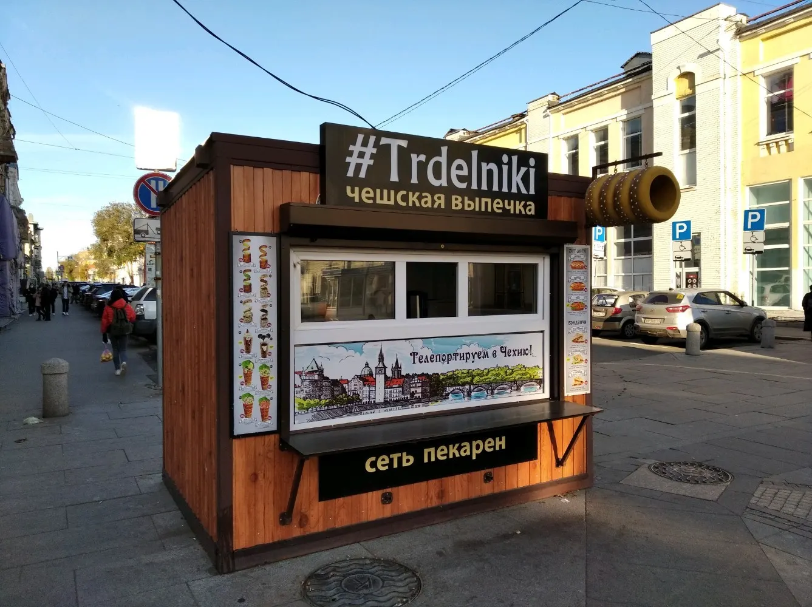
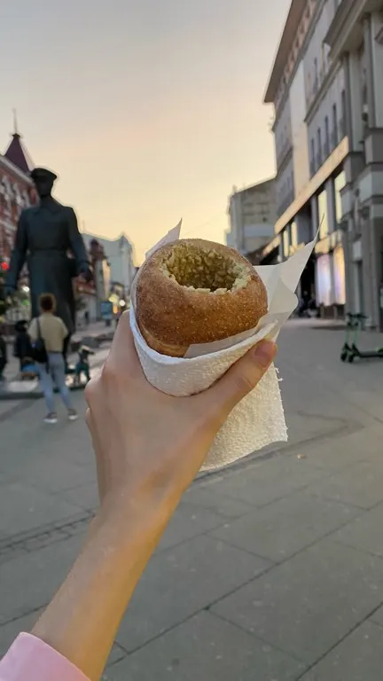
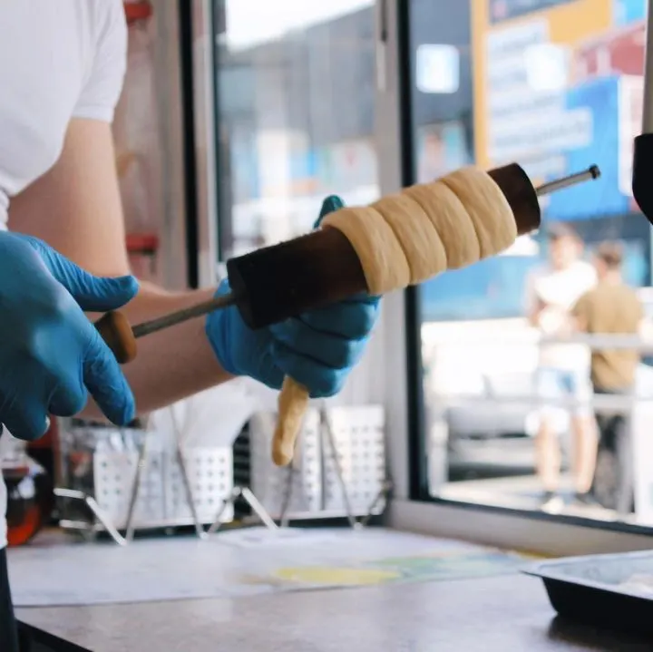
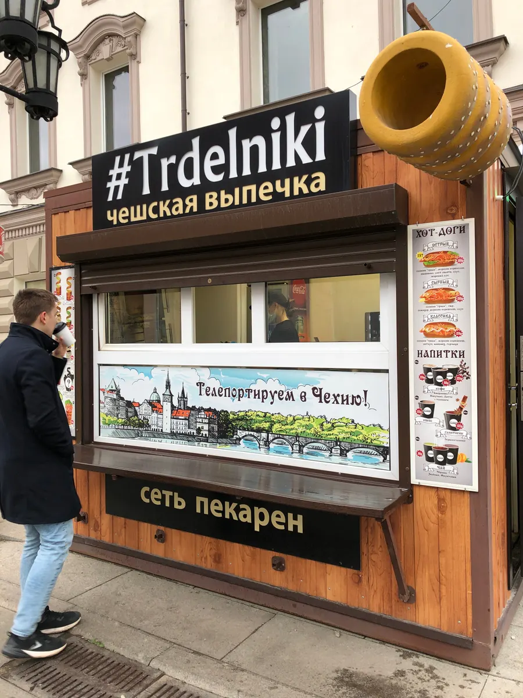

Чешская выпечка · Самара
Trdelniki: чешская выпечка в Самаре
Выберите трдельник или напиток и время - заказ в одном сообщении. Начинки и цену назовём при подтверждении.
- Заказ одним сообщением
- Ждём: ежедневно, 10:00–22:00
- 5,0 и 144 отзыва на Яндекс.Картах

Что можно заказать
Цену называем при подтверждении заказа: она зависит от состава, веса и оформления.
Позиции
- Трдельник с начинкойв отзывах: вкусное тесто и начинки, свежий и горячийуточнить
- Кофев отзывах: понравилсяуточнить
- Милкшейкив отзывах: понравилисьуточнить
- Домашние лимонадыв отзывах: понравилисьуточнить
- Имбирный чайв отзывах: очень вкусныйуточнить
Как заказать
Пишете нам
Выберите позицию и время в форме ниже или напишите в мессенджер.
Подтверждаем заказ
Начинки и цену называем при подтверждении.
Забираете горячим
Павильон: Ленинградская улица, 68.



Что пишут гости
Свежая выпечка с пылу с жару
В отзыве: выпечка свежая, с пылу с жару, так сказать.
Вкусное тесто и начинки
В отзыве: такого вкусного теста и начинок я ещё не пробовал.
Доброжелательные продавцы
В отзыве: встретили добродушно, рассказали про своё изделие, в глазах виден интерес к работе.
Отзывы с Яндекс.Карт
«Полакомились выпечкой этой сети в парке Гагарина. Очень вкусно, такой аромат около павильона, что мы, проходя мимо, задержались и не пожалели:). И очень вкусный имбирный чай. Что-то новенькое в меню всегда радует. Приятные девушки, быстро и весело все приготовили. Ещё бы пару столиков около них, было бы идеально. Рекомендую очень.»
Любовь Атюшева · 13 августа
«Обалденное место, готовят быстро и учитывают пожелания (что-то убрать из блюда), терминал удобный. Меню разнообразное, напитков много. Рекомендую!»
Екатерина Кожевникова · 1 мая
«Вчера посетил заведение с Трдельниками. Попробовал фисташковый и с темным шоколадом. Тесто мягкое, аромат сногсшибательный. Отдельно хочу отметить скорость и вежливость персонала, девушка помогла с выбором, посоветовала новинки. Остался очень доволен и обязательно вернусь!»
chr · 16 апреля
Отзывы с карточки на Яндекс.Картах.
Частые вопросы
Как заказать?
Выберите позицию и дату в форме на странице или напишите в мессенджер. Подтвердим детали и стоимость.
Где вы находитесь?
Самара, Ленинградская улица, 68. ежедневно, 10:00–22:00.
Сколько это стоит?
Цену называем при подтверждении заказа: она зависит от состава, веса и оформления.
Напишите, что и на какую дату нужно
- Адрес
- Ленинградская улица, 68, Самара
- Часы
- ежедневно, 10:00–22:00
- Телефон
- +7 (937) 999-58-88